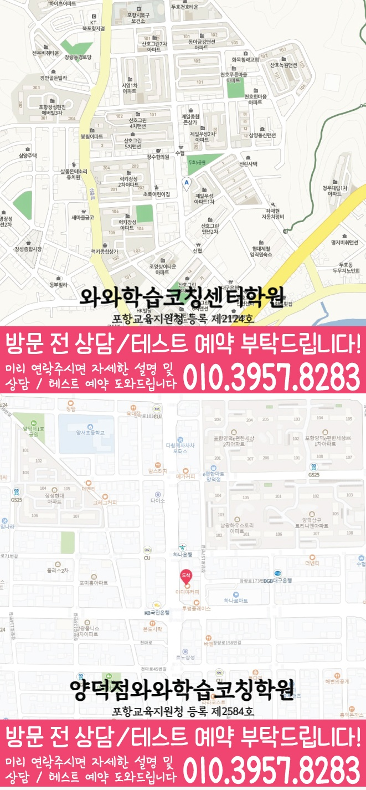

단순 문제풀이보다 현재 실력(개념 이해도, 문항 유형별 약점, 실수 패턴)을 먼저 확인해 학습 순서를 정합니다.
지역별 수강 안내
장성동 고2 영어학원
방문할 지점과 수강 조건
두호점 수강 정보
- 연결 지점
- 와와학습코칭센터학원
- 영어 수강 학년
- 중1~중3 / 고1
- 방문 주소
- 경상북도 포항시 북구 용두산길 32 3층
두호점의 제공 자료에서는 고2 영어 수강 가능 여부가 확인되지 않습니다. 등록 전 해당 학년의 개설 여부와 수업 조건을 먼저 문의해 주세요.
선생님 소개
두호점 선생님을 만나보세요
선생님의 인사와 학습 지도 방향을 살펴보고, 상담에서 궁금한 내용을 준비해 보세요.
두호점의 제공 자료에서는 고2 영어 수강 가능 여부가 확인되지 않습니다. 등록 전 해당 학년의 개설 여부와 수업 조건을 먼저 문의해 주세요.
장성동(포항시) 수업의 핵심 포인트
어휘·문법을 근거로 독해가 되게 만들고, 내신/수능형 유형까지 단계적으로 확장해 점수를 누적합니다.
과목별로 시간 배분과 복습 타이밍을 조절해, 특정 과목만 강해지지 않고 전체 성적이 안정적으로 상승하도록 관리합니다.
틀린 이유를 ‘개념 부족/독해 흐름/계산·문장 이해/실수’로 분류해 다음 시험에서 같은 실수를 반복하지 않게 합니다.
선생님 특징
학생이 막히는 지점을 대화와 풀이 과정으로 확인하고, 필요한 개념을 다시 연결해 이해가 ‘문장 처리’로 이어지게 합니다.
숙제·복습·오답 정리 습관을 루틴으로 만들고, 고2 시기에 중요한 시간 관리와 계획 이행을 지속적으로 지도합니다.
학교 시험 스타일을 반영해 문제 접근 방법을 코칭하고, 취약 유형을 우선 보완하도록 학습 방향을 조정합니다.
수업 진행방식
1. 현재 수준 확인
고2 과정 기준으로 어휘·문법 기반 독해 수준, 수학 단원별 취약점, 국어 독해/문학·비문학 접근, 영수 유형 수행도를 함께 점검합니다.
2. 개념 정리와 유형 학습
바로 풀기보다 핵심 개념을 먼저 정리한 뒤, 학교 내신형→변형→실전형 순서로 문제를 구성해 실력이 안정되도록 합니다.
3. 오답 관리와 학습 피드백
틀린 문제는 정답만 확인하지 않고 원인을 분석해 재발 방지 포인트를 정리합니다. 다음 학습 때 바로 반영되도록 피드백합니다.
과목별 학습 전략(고2)
영어
- 어휘·문법을 독해로 연결해 ‘문장 해석→의미 파악’이 되게 훈련합니다.
- 내신 서술형/독해형 유형을 반복해 시간 안에 정답에 도달하는 연습을 합니다.
수학
- 개념-유형-오답 원인(실수/풀이 구조 미흡)을 기준으로 단원별 보완 계획을 세웁니다.
- 문항 접근 순서와 계산 습관을 함께 잡아 같은 실수를 줄입니다.
국어
- 비문학/문학에서 핵심 근거를 찾는 읽기 방식과 선택 기준을 훈련합니다.
- 오답 유형을 ‘근거 찾기 실패/문장 해석/선택 기준’으로 정리해 개선합니다.
영수(영어+수학)
- 주요 단원을 묶어 시험 대비 효율을 높이고, 체력·시간 배분까지 함께 관리합니다.
- 주간 복습 루틴과 오답 누적 관리를 통해 상승 곡선을 만듭니다.
시험 대비 운영(장성동 고2)
내신 기간 전략
- 학교 범위와 출제 경향에 맞춰 핵심 단원부터 우선순위를 조정합니다.
- 실수 유형/취약 유형을 먼저 다뤄 점수 변동 폭을 줄입니다.
실전형 훈련
- 시간 제한 하에 문항을 풀고, 풀이 흐름을 점검해 속도와 정확도를 동시에 끌어올립니다.
- 오답 원인을 기준으로 다음 학습 과제를 구체화합니다.
기본기 보강
- 영어는 어휘·문법 기반 독해를, 수학은 개념과 유형 연결을 집중 보완합니다.
- 국어는 읽기 방식과 선택 근거를 반복 훈련해 안정적으로 점수화합니다.
학습 관리
- 복습 주기와 숙제 계획을 점검해 공부가 ‘쌓이게’ 운영합니다.
- 상담을 통해 다음 목표를 설정하고 학습 방향을 지속 조정합니다.
와와학습코칭센터 두호점은 포항시 장성동(시군구/동 수정 가능) 고2 학생의 현재 상태를 기준으로 영어·수학·국어·영수 학습을 정리하고, 상담을 통해 내신 대비 로드맵을 구체적으로 안내드립니다.
센터 위치 안내
주소
경상북도 포항시 북구 용두산길 32 3층
오시는 길
파리바게뜨 맞은편 건물 3층입니다.
상담에 참고할 학교 목록
학교별 내신 수업과 수강 가능 여부는 센터에 확인해 주세요.
초등학교
장량초등학교
장성초등학교
포항장원초등학교
포항장흥초등학교
중학교
대도중학교
장흥중학교
환호여자중학교
고등학교
대동고등학교
두호고등학교
포항고등학교
포항여자고등학교
포항장성고등학교
포항중앙고등학교
포항중앙여자고등학교
과목별 수강 가능 학년
국어
수강 가능 학년은 센터에 문의해 주세요.
영어
중1
중2
중3
고1
수학
초4
초5
초6
중1
중2
중3
고1
고2
과학
수강 가능 학년은 센터에 문의해 주세요.
사회
수강 가능 학년은 센터에 문의해 주세요.
수강 안내
영어 파닉스 이수 여부와 초등 수강 가능 학년을 센터에 확인해 주세요. 수학 미적분·확률과 통계는 가능하며, 기하는 운영하지 않습니다. 국어·과학·사회의 개설 여부도 확인이 필요합니다.
학원 등록 정보
교육비 참고와 확인할 조건
두호점 수업료 안내
| 대상 | 과목·과정 | 수업 구성 | 안내 금액 |
|---|---|---|---|
| 초등 | 영어 또는 수학, 과목당 | 주 2회 90분, 와와 2타임 + 공부9도 1타임 | 140,000원 |
| 초등 | 영어 또는 수학, 과목당 | 주 3회 90분, 와와 3타임 + AI 1타임 | 198,000원 |
| 중등 | 영어 또는 수학, 과목당 | 주 3회 2시간, 와와 3타임 + AI 1타임 + 공부9도 3타임 | 280,000원 |
| 고등 | 영어 또는 수학, 과목당 | 주 2회 3시간, 와와 4타임 + AI 1타임 | 319,000원 |
| 고등 | 영어 또는 수학, 과목당 | 주 3회 3시간, 와와 6타임 + AI 1타임 | 469,000원 |
센터 안내 자료에 기재된 금액입니다. 수강 가능 학년, 과목, 수업 시간과 추가 프로그램에 따라 달라질 수 있으므로 최종 교습비는 센터에 확인해 주세요.
고2 영어 상담부터 오답관리까지 이어지는 흐름
고2 영어는 내신 지문 관리, 문법 적용, 독해 속도, 어휘 누적이 함께 필요한 시기입니다. 상담에서는 현재 점수보다 어떤 지점에서 해석과 근거 판단이 흔들리는지 먼저 확인합니다.
현재 수준 확인
학교 진도, 최근 영어 시험 결과, 어려운 지문, 문법 단원, 어휘 암기 습관을 확인합니다.
문법·독해 진단
문장 구조, 구문 해석, 지문 근거 찾기, 선택지 판단 과정을 나누어 약점을 점검합니다.
플래너 실행 점검
어휘 암기, 지문 복습, 문법 문제, 오답 재풀이를 주간 계획으로 나누고 실행 여부를 확인합니다.
오답 원인 분석
틀린 문제를 어휘 부족, 해석 오류, 문법 혼동, 근거 누락으로 분류해 다음 학습에 연결합니다.
CONSULTING CHECKLIST
장성동 고2 영어학원 상담 전 체크리스트
실제 상담 전 아래 항목을 확인하면 학생에게 필요한 영어·수학 학습 방향을 더 빠르게 정리할 수 있습니다.
- 현재 교재사용 중인 교재와 진도를 확인합니다.
- 최근 시험지점수보다 반복되는 오답 유형을 확인합니다.
- 공부 시간평소 공부 시간과 숙제 수행 정도를 봅니다.
- 상담 목표성적, 습관, 오답, 시험 대비 중 우선순위를 정합니다.
STUDY GUIDE
장성동 고2 영어 학원 학습관리 포인트
장성동 고2 영어 학원을 찾는 학생이라면 고2 과정에서 필요한 영어 학습 목표를 먼저 정리하는 것이 좋습니다. 현재 학교 진도와 최근 시험 결과, 숙제 수행 습관을 함께 보면 상담 방향이 훨씬 구체적입니다.
시험 직전에 한꺼번에 외우기보다 지문별 핵심 어휘와 표현을 주간 단위로 누적 관리합니다.
감으로 해석하지 않고 주어·동사·수식어 구조를 표시해 독해 근거를 남기는 습관을 만듭니다.
본문 암기에서 끝내지 않고 빈칸, 순서, 어법, 서술형으로 바뀔 수 있는 문장을 따로 정리합니다.
경상 포항시 장성동 상담 전 체크
최근 시험지, 학교 진도, 어려운 단원, 숙제 수행 정도를 함께 정리해두면 상담에서 학생에게 필요한 학습 순서를 더 빠르게 잡을 수 있습니다.
함께 보면 좋은 학습가이드
현재 페이지의 학년·과목과 연결되는 정보성 콘텐츠입니다. 지역 페이지와 함께 읽으면 상담 준비와 학습 계획을 더 구체화할 수 있습니다.
장성동 관련 학원 페이지
현재 보고 있는 지역 안에서 센터 안내와 학년·과목별 상세 페이지로 바로 이동할 수 있습니다.
장성동 고2 영어학원 상담이 필요하신가요?
고2 영어의 현재 문법 이해도, 독해 속도, 어휘 습관, 내신 대비 계획을 정리해 상담문의로 남겨주시면 학습 방향을 더 구체적으로 확인할 수 있습니다.
상담문의LOCAL DETAIL LINKS
장성동 관련 학습 페이지 바로가기
같은 동네 안에서 함께 보면 좋은 학년·과목별 학습 안내 페이지를 정리했습니다.
동네 학원
장성동학원 영어수학 전문학원
같은 동네의 기본 영어수학 학원 안내로 이동합니다.
연관 과정 장성동 고1 수학학원같은 동네의 다른 학년·과목 안내도 함께 확인할 수 있습니다.
연관 과정 장성동 고1 영어학원같은 동네의 다른 학년·과목 안내도 함께 확인할 수 있습니다.
연관 과정 장성동 고2 수학학원같은 동네의 다른 학년·과목 안내도 함께 확인할 수 있습니다.
연관 과정 장성동 중2 수학학원같은 동네의 다른 학년·과목 안내도 함께 확인할 수 있습니다.
연관 과정 장성동 중2 영어학원같은 동네의 다른 학년·과목 안내도 함께 확인할 수 있습니다.
연관 과정 장성동 중3 수학학원같은 동네의 다른 학년·과목 안내도 함께 확인할 수 있습니다.
연관 과정 장성동 중3 영어학원같은 동네의 다른 학년·과목 안내도 함께 확인할 수 있습니다.
수강 전에 자주 묻는 질문
장성동에 있는 별도 지점인가요?
이 동네 안내에서 연결되는 곳은 와와학습코칭센터학원입니다. 실제 방문 주소는 경상북도 포항시 북구 용두산길 32 3층입니다.
고2 영어을 수강할 수 있나요?
두호점의 제공 자료에서는 고2 영어 수강 가능 여부가 확인되지 않습니다. 등록 전 해당 학년의 개설 여부와 수업 조건을 먼저 문의해 주세요.
교육비 표의 금액으로 바로 등록할 수 있나요?
지역 공통 참고표는 개별 지점의 확정 교습비가 아닙니다. 교습비 안내 자료에서 과목당 금액과 수업 시간·횟수·교재비를 확인하고 최종 비용을 상담에서 확인하세요.
학습코칭 안내 이미지와 위치 지도 보기



안내 자료 대조: . 현재 모집·시간표·최종 비용은 지점에서 확인해 주세요.